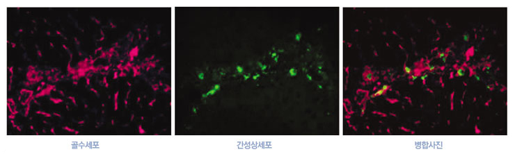
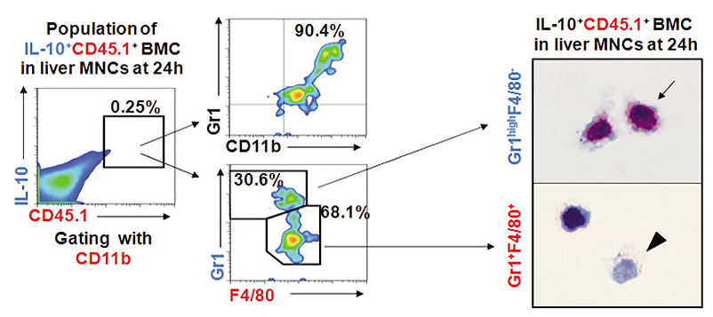
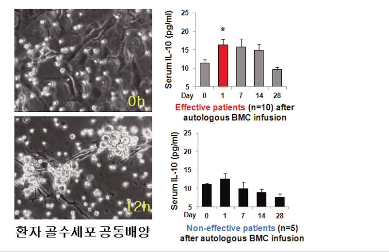

KAIST Top 10
KAIST Top 10
KAIST RESEARCH ACHIEVEMENTS
Therapeutic Effects of Autologous Bone Marrow Cells on Cirrhotic Liver
Graduate School of Medical Science and Engineering
Won-Il Jeong
Summary
In 2033, viral hepatitis-mediated liver cirrhosis is overcome worldwide, while chronic alcohol consumption or westernized, diet, intake-mediated alcoholic and non-alcoholic liver cirrhosis are sharply increasing in all ages. In this case, all patients with a cirrhotic liver can easily recover by autologous bone marrow cell therapy, which is leading to a huge decrease of social and economic expenses in patients and many foreign patients and people will visit Korea for their therapy and medical tours.
R&D Report
This study demonstrated the beneficial effects of autologous bone marrow cells on patients with liver cirrhosis, which is a representative result of translational research performed at the Graduate School of Medical Science and Engineering, KAIST. In addition, the autologous bone marrow cell infusion therapy will contribute to people's health and welfare and also has huge benefits for social and economic expenses.
This study demonstrated the beneficial effects of autologous bone marrow cells on patients with liver cirrhosis, which is a representative result of translational research performed at the Graduate School of Medical Science and Engineering, KAIST. In addition, the autologous bone marrow cell infusion therapy will contribute to people's health and welfare and also has huge benefits for social and economic expenses.
Animal experiment
Within 24 hours, infused BMCs were in close contact with activated HSCs, which was associated with reduced liver fibrosis, enhanced hepatic expression of IL-10, and expanded regulatory T cells in the liver at 24 hours after BMC infusion. In contrast, IL-10-deficient BMCs failed to reproduce these effects in fibrotic livers. Intriguingly, in isolated cells, CD11b+Gr1+ BMCs expressed more IL-10 after co-culturing with activated HSCs, leading to suppressed expression of collagen and alpa-smooth muscle actin in HSCs.
 Figure 2. Interaction between infused BMC and activated HSCs
Similar to murine data, human BMCs expressed more IL- 10 after co-culturing with human HSCs and serum IL-10 levels were significantly elevated in patients with liver cirrhosis after autologous BMC infusion. Surprisingly, 10 of 15 patients after autologous BMC infusion showed improvements. These data reinforce IL-10 as a potential factor in the early response to BMC infusion therapy for treatment of hepatic fibrosis in mice as well as humans.
 Figure 3. IL-10 Production of CD11b+Gr1+ BMC
Conclusion
In conclusion, activated HSCs increase IL-10 expression in BMCs, which in turn ameliorated liver fibrosis and expanded hepatic regulatory T cells. Our findings could enhance the design of BMC therapy for liver fibrosis.
 Figure 4. In vitro Exp
Research Funding
This study was supported by the National Research Foundation of Korea (NRF) grant funded by the Korea government (MEST) (2011-0029328) and grants of the Korean Health Technology R&D Project, Ministry of Korea (A111345 and A111498)
Research Results
- Nomination of Top 5 on Medical Research Studies performed among 2012 in Korea.
- International Award (7th ISALPD/C) and Blue Ribbon Lecture Award of KSMCB
- Jeong et al., CD11b+Gr1+ bone marrow cells ameliorate liver fibrosis by producing interleukin-10 in mice. Hepatology. 2012, 56(5):1902-12.
- International invitation of lectures (USA, Japan), Domestic invitation of lectures (3 times)